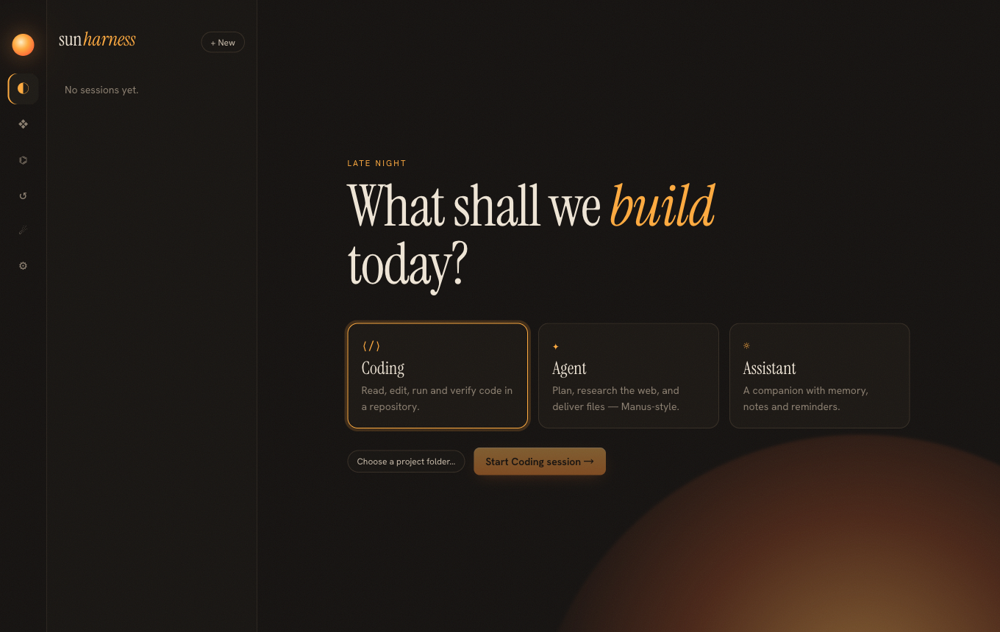
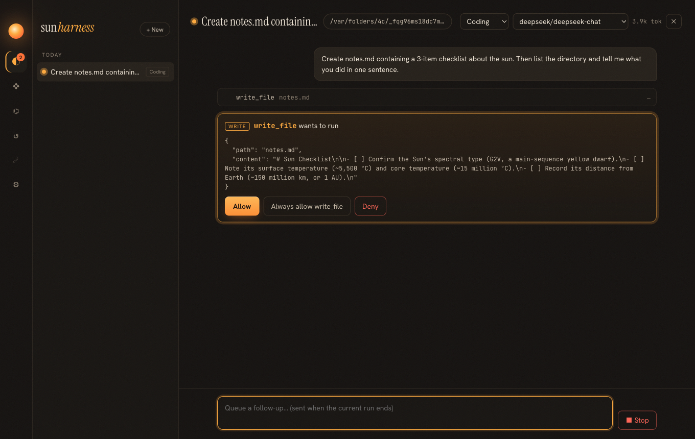
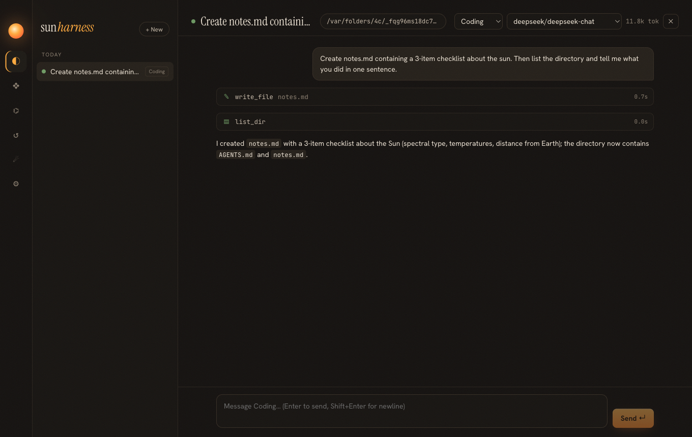

Milestone M3 · apps/desktop · spec specs/004-desktop.md
04 · The desktop app
The desktop is a thin view over the same core the CLI uses. Most of the interesting lessons came from the end-to-end test, which found two bugs that unit tests could not.
Process architecture
window.sun.onLive(fn)"] end subgraph Main [Main process · Node] IPC[ipcMain 'sun:call'
allowlist in shared/api.ts] HOST[HarnessHost
core bundled in] BG[Background tick 60s
auto-resume · schedules · intel catch-up] end UI --> API --> IPC --> HOST HOST -- "'sun:live' events" --> API --> UI BG --> HOST
- The renderer has no Node access (
contextIsolation,sandbox, nonodeIntegration). One IPC channel accepts only methods on an allowlist. - Core is bundled into the main process by electron-vite, so the app has one runtime and one host instance.
- GUI apps on macOS do not inherit the shell environment, so API keys are imported from
~/.sun/.envand simpleexportlines in shell rc files. The lines are parsed, never executed (see page 05 for why).


suggest mode waits on an approval card (from the end-to-end test, live model).
Design
The visual direction is a warm dark "solar instrument panel": ink-brown background, one amber accent, an editorial serif (Instrument Serif) for headings, a clean grotesk (Hanken Grotesk) for body text, and JetBrains Mono for tool output. Fonts are bundled so the app works offline. Tool calls are compact cards that expand on click. Approvals glow amber because they are the only thing that blocks progress.
Bug 1 — lost events from React batching
The session finished and the log was complete, but the chat showed the first tool still running and no final answer. Why?
The app kept the latest live event in a single React state value, and the chat applied it in an effect. Several events arriving in the same tick were batched by React into one render, so only the last value was seen and the others were dropped. Fix: the chat subscribes to the live stream directly and appends every event, merging with its initial snapshot by seq.
Bug 2 — a test that passed too early
After fixing bug 1, the end-to-end test still showed "working". The live event trace even had an assistant message squeezed between two tool results. Was the core broken?
No. The log on disk was perfect, and the out-of-order events were simply the model calling tools in two steps. The test used Playwright's waitForFunction with an async predicate; it returns a Promise, a Promise is truthy, so "wait until idle" returned immediately and the screenshot captured the run midway. Fix: poll explicitly from Node until the status is idle. The test now also asserts that the UI matches the log: an idle status dot, no "working" indicator, and every tool card marked successful.
When the UI and the log disagree, read the log on disk first. It separates "the product is wrong" from "the observer is wrong" in one step.
Build and environment issues
| Symptom | Cause | Fix |
|---|---|---|
| Electron binary missing after install | pnpm 11 blocks dependency install scripts unless allowed; onlyBuiltDependencies was replaced by an allowBuilds map | allowBuilds: { electron: true, esbuild: true } in pnpm-workspace.yaml |
fetch failed downloading Electron | GitHub release downloads blocked on this network | ELECTRON_MIRROR=https://npmmirror.com/mirrors/electron/ |
git commit rejects --trailer | an old git 2.23 first on PATH | use the system /usr/bin/git 2.39 |
The end-to-end smoke test
node apps/desktop/e2e/smoke.mjs
# temp SUN_HOME + temp repo → launch built app → create session → send a live prompt
# → approval card appears → click Allow → poll until idle → assert UI matches log
# → screenshot every screen → exit non-zero on any mismatch